InjOnl предназначен для автоматической настройки основных калибровок программного обеспечения инженерных контроллеров Январь-5.1 и Январь 7.2 как в режиме реального времени, так и в режиме
отложенного регулирования
.
Требования к аппаратуре и ПО.
Ноутбук не ниже P-II (500 МГц) под управлением Windows 98-XP, 2 COM (возможно использование вместо 1 COM USB-порт с переходником USB to COM
для подключения ШДК ) Инженерный ЭБУ Январь 5.1 (7.2) Адаптер К-Line
Контроллер широкополосного датчика кислорода Innovate LC-1 или аналогичный из поддерживаемых.
Базовый набор ПО для редактирования прошивок и программирования блоков ЭБУ.
Блок питания ноутбука от автомобильной сети (рекомендуется).
В качестве используемых прошивок ЭБУ возможно применение как ДАД-прошивок, так и ДМРВ.
Управляющая программа.
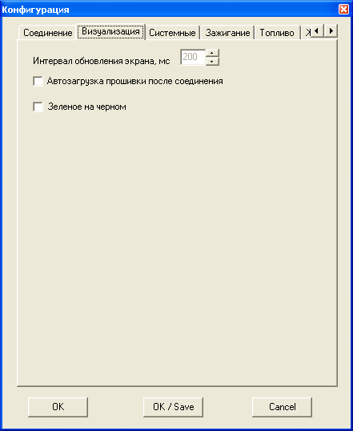
Управляющая программа обеспечивает автоматическую настройку калибровок, определяющих ХХ, зажигание и топливоподачу.
Основные возможности: Зажигание УОЗ Фильтры детонации Топливоподача Расчет поправки БЦН
Расчет БЦН
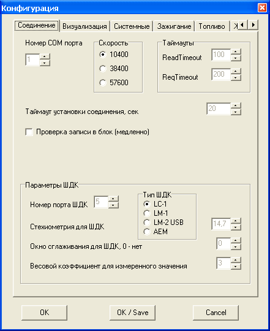
Расчет температурной коррекции по ТОЖ и ТВ Холостой ход Корректировка Уставки РХХ
Фаза впрыска
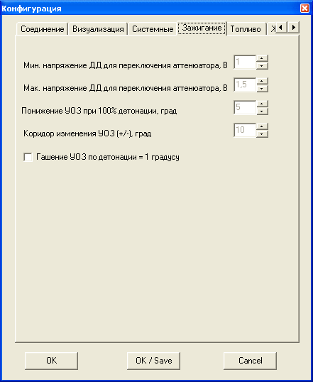
Расчет фазы впрыска исходя из указанного метода впрыска Дополнительные возможности программы:
Сохранение измеренных параметров в файле-протоколе в виде текста или файла формата CSV, для последующего анализа.
Построение графиков массового, циклового расходов и давления от оборотов (графики
)
Чтение и декодирование кодов ошибок ЭБУ, их обнуление
Автоматическая интерполяция корректируемых таблиц (существенно ускоряет настройку
невыкатанных
прошивок)
Принцип функционирования.
Комплекс является контуром обратной связи, целевой функцией которого является приведение измеренных величин к тарировкам, заданным в исходной прошивке. Управляющая программа работает по принципу измерения параметров работы ДВС и опираясь на калибровки прошивки вычисляются поправки, которые автоматически загружаются в блок, и дальнейшее регулирование будет вестись с учетом сделанных изменений. Поправки вычисляются по режимным точкам, совпадающим с картами калибровок прошивки, в той же сетке квантования. При расчетах используются алгоритмы, позволяющие использовать не только пошаговое приближение, но и
прогнозирование
, таким образом большое рассогласование желаемых параметров и измеренных компенсируется за одно изменение, после чего возможно пошаговое точное приближение.
Более подробно принципы регулирования будут описаны в разделах, посвященных настройке конкретных параметров.
Настройка управляющей программы.
Главное меню.
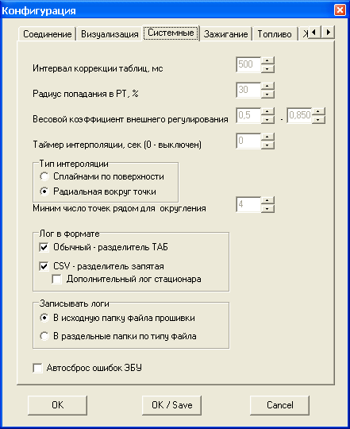
Файл
Открыть - загрузить прошивку в управляющую программу из файла
Загрузить из ЭБУ - Считать прошивку в управляющую программу из инженерного ЭБУ Выход - Завершить работу с программой.
Соединение
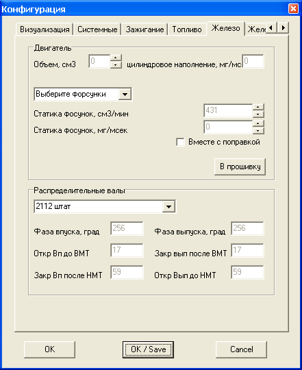
Связь с ЭБУ Соединить Разъединить
Обработка остановить/возобновить обработку и накопление данных (связь не разрывается)
Остановить Продолжить Свойства Настройки системы.
Соединения Визуальные Системные Зажигания Топлива Железо
Конфигурация.
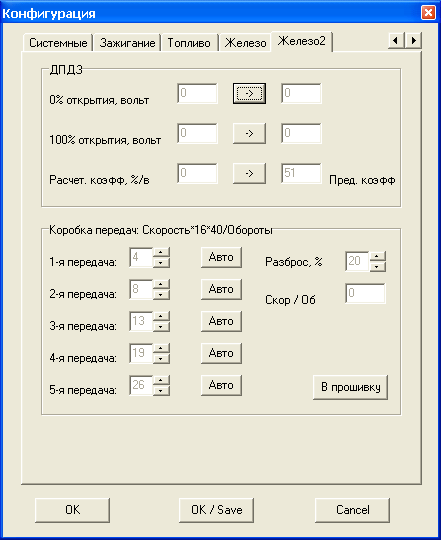
Соединение.
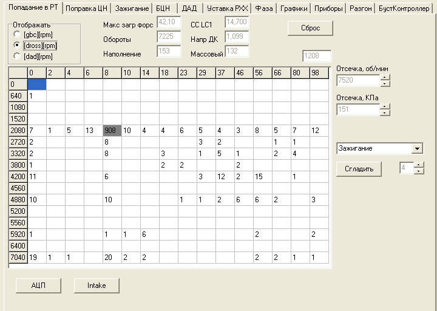
Номер порта
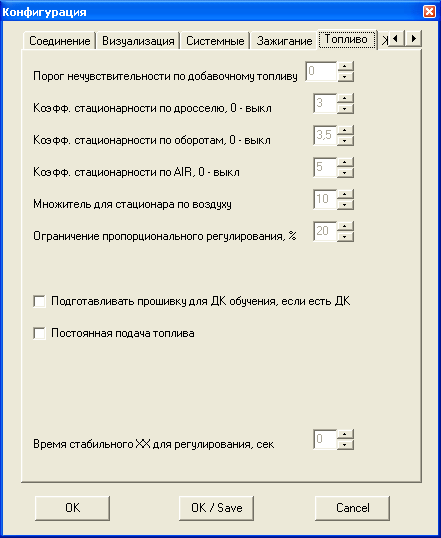
порт, на котором подключен адаптер K-Line.
Скорость
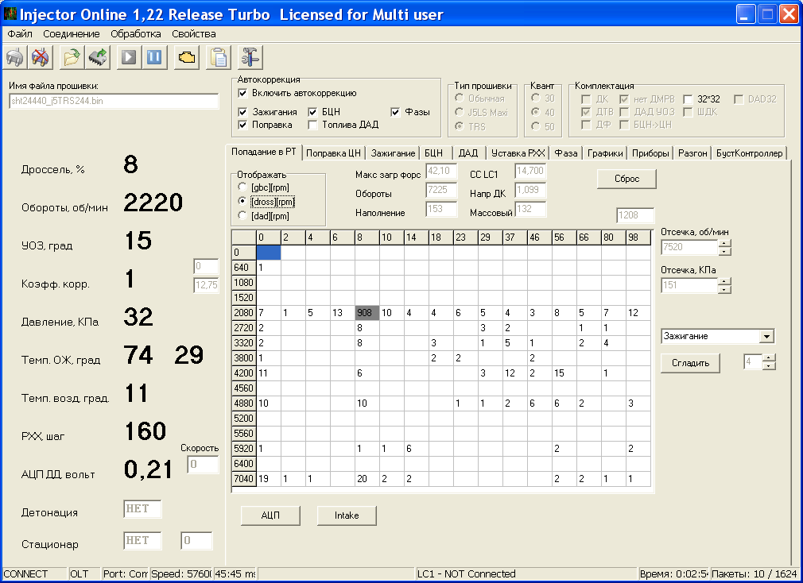
выбор скорости соединения от штатной 10400 до высокой 57600 Таймаут соединения
время, в течении которого система будет пытаться установить диагностическую сессию с ЭБУ.
Таймаут ReadTimeout
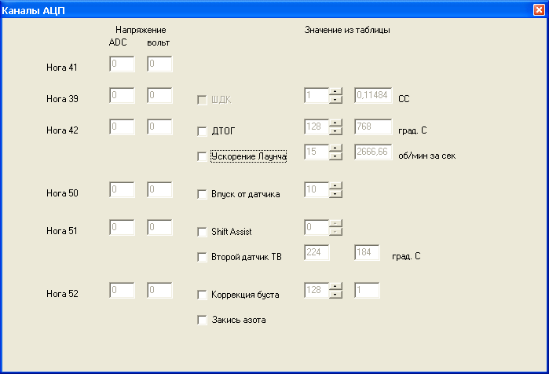
таймаут на чтение ответа от ЭБУ Таймаут ReqTimeout
таймаут между ответом от ЭБУ и выдачей нового запроса. или LM1.
Данные таймауты настраиваются для конкретного типа прошивок. Стандартные значения 50 и 200, однако как показывает практика
быстрый софт может работать и 40/40. Основной критерий правильного выбора таймаутов
отсутствие ошибок в протоколе обмена (кнопка ComEr). Чем меньше таймауты, тем быстрее идет обмен данными, и соответственно настройка.
Номер порта ШДК
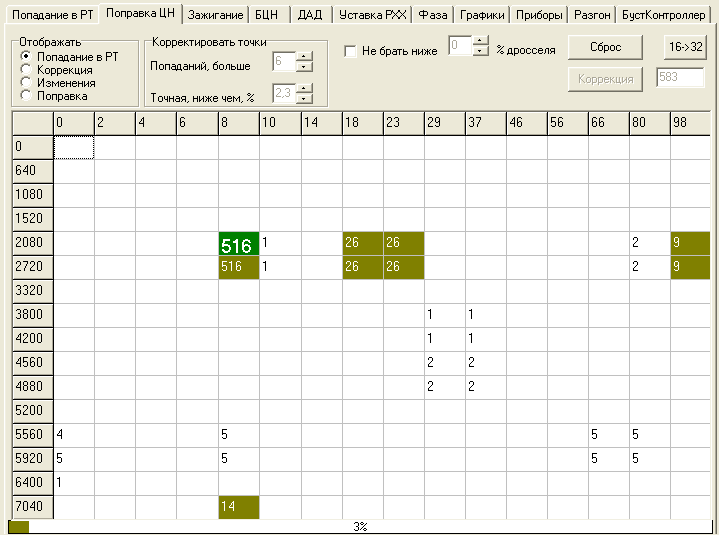
порт, на котором подключен контроллер ШДК. Этот порт может быть виртуальным, например, используя переходник USB-COM.
Тип ШДК
выбор типа ШДК LC-1, LM-1, AEM (необходимо указать номер порта) или LM-2 через USB, порт указывать не надо.
Стехиометрия для ШДК
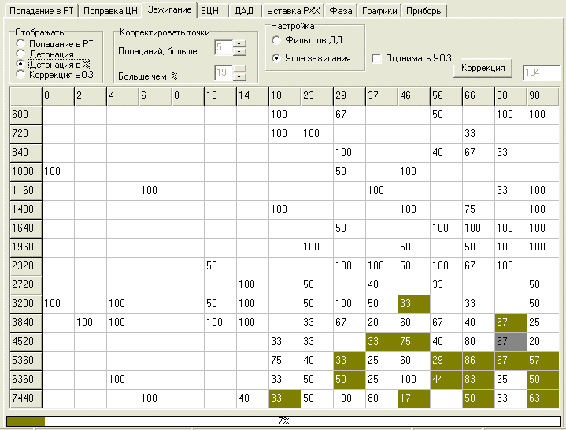
Значение стехиометрии для используемого топлива. Должно совпадать с значением, установленным в ШДК. При неправильной стехиометрии адекватная настройка невозможна.
Окно сглаживания для ШДК - Число измерений с ШДК, которые будут усреднены.
Весовой коэффициент для измеренного значения - К-т усреднения. Алгоритм примерно такой: (изм1 + изм2 +
+измN*K)/(N+K), где измN
текущее значение с ШДК, K
весовой к-т., N
размер окна. Рекомендуемое значение для окна
4-5, для к-та 6-8 Таймаут соединения
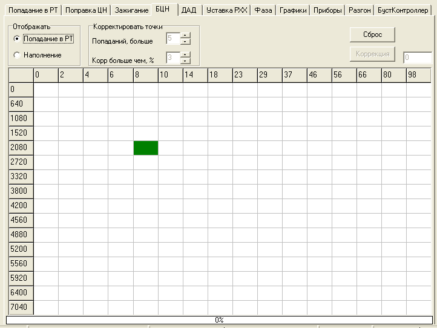
время в течении которого программа будет пытаться установить связь с блоком, как при первом соединении, так и при обрыве связи.
Длинная диагностика
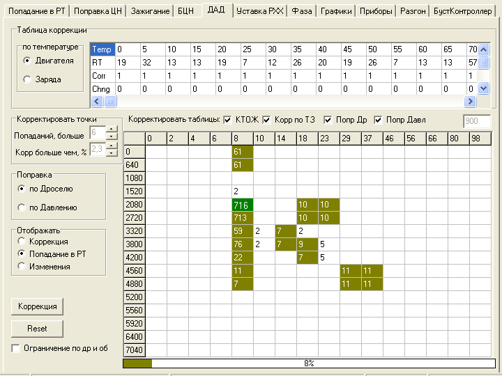
при работе с прошивкой TRS параметры работы программы не рассчитываются, а берутся из диагностики. Так же в лог идет больше значений работы контроллер.
Проверка записи в блок
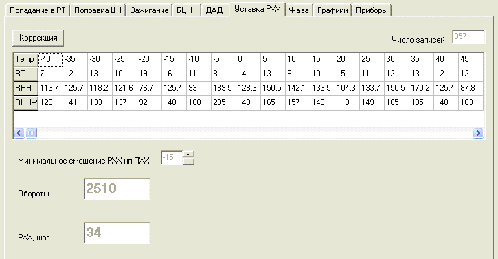
каждый записанный пакет дополнительно перечитывается, на что тратится время но есть гарантия что данные записаны в блок ОЛТ. Применяется исключительно при плохих адаптерах, которые дают частые обрывы связи, неустойчивую работу диагностики и тд.
Визуализация.
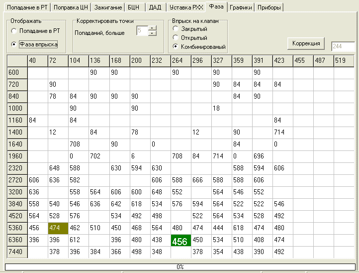
Время обновления экрана
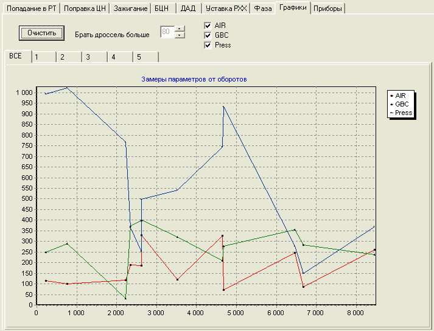
задает интервал между перерисовками экрана. Как показал опыт достаточно 200 мс. Более частые обновления слишком сильно нагружают компьютер, более редкие
вызывают дискомфорт оператора.
Автозагрузка прошивки после соединения
автоматически вызывает диалог выбора файла для настройки.
Зеленое на черном
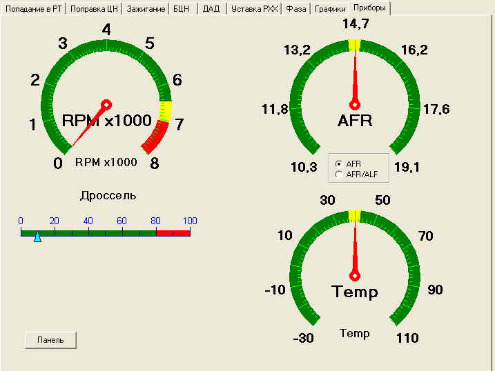
для плохих экранов отображение основных параметров меняется со штатного на зеленый, более крупный шрифт на черном фоне.
Интервал коррекции таблиц
задает время, через которое происходит пересчет рабочих таблиц, исходя из накопленных данных. Следует учесть, что некоторые вычисления требуют довольно много вычислительных ресурсов, поэтому данный параметр определяется исходя из имеющегося ноутбука.
Радиус попадания в РТ
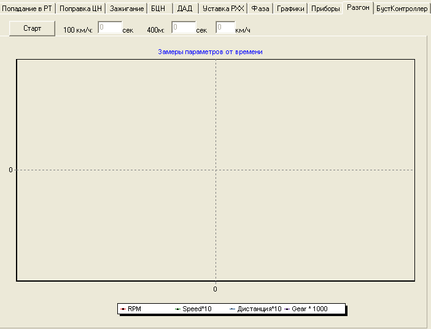
диапазон отклонения текущей точки измерения от середины рабочей точки (РТ), используемой прошивки. Определяется как % от расстояния до следующей РТ. Например, таблица квантования дросселя, точка 18%, предыдущее значение 14%, следующее
23%, таким образом, если радиус задать 25% в область обработки квантованного значения 18% попадут значения в диапазоне (18-(18-14)*0.25)
(18+(23-18)*0.25) т.е. от 17% до 19% включительно.
Весовой коэффициент внешнего регулирования (конечный предел - начальный предел) - Дополнительный множитель, указывающий какую часть от вычисленного значения можно сразу записать в прошивку. Т.е. <Новое значение в прошивке> = <Старое значение в прошивке>
<вычисленная коррекция>*<весовой к-т>. При меньших значениях обеспечивается плавное и медленное (за большее число регулировок) приближение к правильному значению. При значениях близких к 1
быстрое, но скачкообразное, что может вызвать перерегулирование. С каждым новым регулированием, внешний коэффициент будет меняться от начального переела до конечного. Экспериментально установленные оптимальные значения 0.85 -1.
Таймер интерполяции - Время в секундах, через которое происходит автоматическая интерполяция таблиц, для быстрого заполнения Режимных Точек, в которых не было обучения.
Тип интерполяции
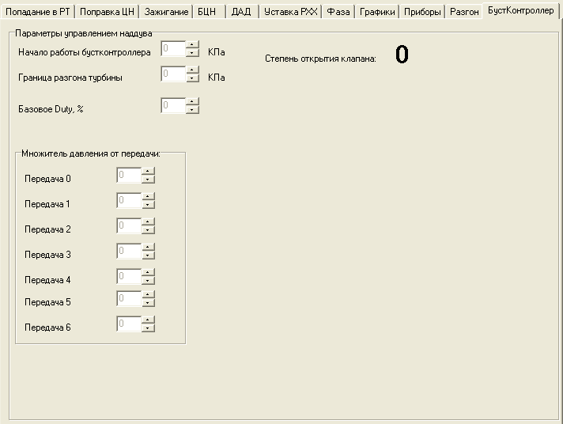
Используемый алгоритм интерполяции. Сплайнами
позволяет с приемлемой ошибкой заполнять всю таблицу по небольшому числу измеренных точек. Данный алгоритм хорошо работает на предварительной настройке, когда выкатанных точек мало, а ошибки по топливу значительные. Радиальная
противоположный алгоритм, ориентированный на вычисление немногочисленных точек по достоверной поверхности. Применяется для финальной настройки, когда в целом все настроено, но остались недонастроенные точки.
Минимальное число точек рядом для округления - Задает минимальное количество
точек вокруг значения, при которых возможно использование алгоритма интерполяции (вычисление
невыкатанных
точек опираясь на
значения). При значении 3
вычисляется вся таблица, однако точность такой
весьма сомнительна. Рекомендованное значение 5-6 для предварительной настройки и 6-7 для точной.
Формат ЛОГа - зависит от используемого для анализа ПО. Для ECUEDIT
CSV. Возможность скидывать в лог только стационарные по топливу значения. Для просмотра в Экселе или другом табличном процессоре можно использовать разделители табуляторы
Записывать логи: - в исходную папку
логии будут писаться туда же где расположен файл прошивки, новый файл прошивки будет иметь увеличенный на 1 номер
- В раздельные папки
будут созданы папки CSV, BIN, и в них будут писаться файлы логов и прошивок с соответствующими датами и временами, исходный файл прошивки при этом НЕ МЕНЯЕТСЯ.
Автосброс ошибок ЭБУ - возможность сброса ошибок ЭБУ автоматически при их возникновении. Бывает полезным, когда штатный ДК
в зону нерегулирования и выключается. Для продолжения работы необходимо сбросить ошибку ДК.
Минимальное напряжение ДД для переключения аттенюатора
Максимальное напряжение ДД для переключения аттенюатора Минимальный и максимальный порог напряжения от ДД, при котором происходит переключение аттенюатора (режим настройки фильтров ДД).
Понижение УОЗ при 100% детонации Задает величину понижения УОЗ в град. При достижении детонации в РТ уровня 100%
Коридор изменения УОЗ Задает верхний и нижний пределы изменения УОЗ по отношению к исходным значениям в прошивке.
Гашение УОЗ по детонации = 1градусу Убирает гашение УОЗ при обнаружении детонации до 1 градуса, чтобы мог работать алгоритм настройки фильтров ДД и УОЗ.
Топливо.
Порог нечувствительности по добавочному топливу - добавка по топливу при изменении дросселя, ниже которой режим считается стационарным.
Коэфф. Стационарностипо дросселю, оборотам, AIR - Ограничитель максимальной скорости изменения значений положения дросселя, оборотов или расхода воздуха. Если параметр меняется быстрее
данные для обработки отбраковываются. Чем меньше значение
тем более значение должно быть стационарно.
Множитель для стационара по воздуху
параметр условно указывающий объем воздуха для вентиляции цилиндра, чтобы режим считался стационарным. Чем больше параметр, тем точнее будет взята точка стационара, но тем больше времени потребуется для этого.
Ограничение пропорционального регулирования
если коэфф коррекции для точки будет больше, чем заданное значение, то он будут приравнен к этому значению. Например, полученный коэфф коррекции по ШДК равен 1,25 а ограничение стоит на 15%, в этом случае, коэфф коррекции будет снижен до 1,15.
Подготавливать прошивку для ДК обучения, если есть ДК - Если в флагах комплектации стоит ДК, данная настройка включает ДК регулирование во всем диапазоне, устанавливает желаемый состав смеси в 14,7 и отключает мощностной режим. Применяется ТОЛЬКО для настройки по СТАНДАРТНОМУ ДК.
Постоянная подача топлива - Данный флаг принудительно запрещает в прошивке отключение топлива в режимах ПХХ. Необходимо включить, иначе на режимах ПХХ состав смеси будет выкатан совершенно невменяемо. После настройки топлива
можно снять.
Время стабильного ХХ для регулирования - Интервал времени в секундах, которое должно пройти с момента обнаружения ХХ до начала регулирования. Рекомендуется не менее 15-20 секунд, иначе будете мерить переходные процессы в выпускной системе. 0
ограничение не работает.
Железо 1
Двигатель объем
объем настраиваемого двигателя в см3 для точного расчета режима стационарности точки по топливу.
Цилиндровое наполнение
наполнение одного цилиндра при НУ (нормальные условия) при 100% эффективности, считается из объема двигателя
Статика форсунок
статическая производительность форсунок, для удобства задается как в см3/мин, так и в мг/мсек. Для ряда типовых форсунок можно выбрать из списка.
Вместе с поправкой
при нажатии
произойдет не только изменение статики форсунок, но и перерасчет поправки относительно старой статики, так, чтобы фактическая подача топлива не поменялась.
Распределительные валы
параметры открытия и закрытия, а так же фазы валов или вала. Необходимо для расчета фазы впрыска. Параметры некоторых типовых валов можно выбрать из списка. Параметры валов, отсутствующих в списке можно узнать у производителя и добавить в текстовый файл cams.txt.
настройка характеристики ДПДЗ для нестандартного или смещенного от нулевого положения датчика
Настройка происходит при включенном зажигании.
при отпущенной педали газа нажимается первая кнопка
;
при полностью нажатой педали газа, нажимается вторая кнопка
производится расчет нового значения %/вольт для прошивке, при этом отображается старый.
если параметр удовлетворяет запросам и похож на правду, жмется третья кнопка
, после чего рассчитанный параметр пишется в прошивку и в блок ЭБУ.
Коробка передач
задается соотношение обороты/скорость для каждой передачи.
Настройка возможна как в ручном режиме, так и при движении на выбранной передачи. При нажатии кнопки
для соответствующей передачи будет занесено текущее значение Обороты/Скорость, отображаемое в данный момент. Кнопка
- переносит данные в таблицу выбора передач в прошивке.
Основное окно программы.
В верхней части окна расположены:
стандартное меню и панель с кнопками его дублирующая:
Кнопки панели: соединить, разъединить, открыть программу с диска, загрузить программу из ЭБУ, возобновить обработку, остановить обработку, ошибки ЭБУ, протокол связи, настройки.
окошко с флагами автоматически настраиваемых таблиц
Включить автокоррекцию
производить автоматическую коррекциию отмеченных ниже таблиц: Зажигания, Поправки ЦН, Циклового Наполнения, Поправок для ДАД, Фазы впрыска и записывать все изменения таблиц, в ЭБУ и в виде прошивки на диск.
Независимо от установленных флагов процесс обучения таблиц идет ВСЕГДА, однако при выключенной автокоррекции изменений калибровок не происходит и при выходе из программы все данные теряются. Для проведения коррекции по накопленным данным необходимо нажать кнопку
в закладке для каждой таблицы в отдельности.
флаги комплектации и тип прошивки.
Либо прошивка обычная в которой таблицы заданы по осям [gbc][rpm], либо специальная спортивное ПО J5LS, в которой таблицы задаются по осям в виде [dross][rpm], либо прошивки семейства J5TRS, отличающиеся от J5LS форматом расширенной диагностики.
Так же возможен выбор квантования по 30 оборотов на байт, 40(так называемое
ПО) или 50 оборотов (специальные версии ПО J5TRS для высокооборотных моторов). На текущий момент выбор типа прошивки и квантования определяется автоматически. Если будут нестыковки, пишите, оперативно исправим.
Флаги комплектации отображаются только важные для правильной работы программы: наличие штатного Датчика Кислорода, наличие Датчика Температуры Воздуха, наличие Датчика Фазы, расчет Циклового Наполнения по ДАД, расчет УОЗ по ДАД, расчета Циклового Наполнения по таблице БЦН (по дросселю), использование поправки ЦН размерностью 32х32, наличия ШДК-регулирования и использования поправки ЦН 32х32 по давлению.
Слева расположены текущие параметры работы двигателя, отображаемые в реальном времени. Основные параметры двигателя, а так же флаги обнаружения детонации, флаг наличия стационара по ДК, и время до наступления стационара по ДК.
Справа находится окно с таблицами, графиками или приборной панелью, в зависимости от выбранного режима отображения.
Снизу панель состояния:
которая показывает статус, порт, скорость, таймауты соединения, последними ошибки, статус ШДК, а так же время работы и скорость передачи пакетов и их общее число за сеанс.
Рабочее окно
Попадание в РТ
В таблице показано общее попадания в Режимные Точки без учета каких либо стационаров. Отображение возможно в трех типах координат: по воздуху, дросселю и давлению. Выбор осуществляется переключателем слева вверху:
Текущая точка в которой происходит движение отображается серой.
По центру отображается максимальная загрузка форсунок и условия, при котором она наступила.
Настройка отсечки топливоподачи осуществляется по максимальным оборотам и максимальному давлению, путем установки соответствующих значений в окошках отсечек. Установленные значения изменяются в контроллере и сохраняются в выходном файле прошивки.
Кнопка
контролировать состояния АЦП в зависимости от флагов дополнительных функций прошивки J5TRS.
служит для настройки системы впуска переменной длины.
Кнопка
вызывает очистку данного окна и накопленных в нем данных.
Так же в этом окне возможно провести Сглаживание таблиц. Выбор таблицы осуществляется ниспадающим списком, коэффициент сглаживания выбирается клювиками выбора. После нажатия кнопки
соответствующая таблица приобретает красивый, плавный вид, без резких всплеском и переходов.
Рабочее окно
В данной закладке устанавливаются параметры для настройки Поправки ЦН, а так же отображается сам процесс настройки. Главные критерии коррекции
число попаданий
точная ниже чем %
Число попаданий
как только наберется число попаданий больше заданного, будет произведена коррекция точек. Как именно будет проведена коррекция, будет зависеть от коррекции в точке:
если она больше чем
точная ниже чем %
, то будет проведена пропорциональная коррекция с учетом числа уже проведенных изменений и Весового коэффициента
чем больше было коррекций, тем ближе рассчитанный Весовой коэффициент ближе к Внешнему весовому коэффициенту, задаваемому в настройках программы.
если же коррекция меньше заданного %, то точка считается выкатанной, но при этом будет продолжаться пошаговая коррекция, те значение поправки будет изменено на одну единицу в большую или меньшую сторону.
Такой двойной механизм позволяет быстро достигнуть приемлемого схождения ненастроенной точки, не попасть в перерегулирование, и дальше так же быстро достигнуть точной настройки.
Необходимо пояснить особенность алгоритма
по мере накопления попаданий, точная настройка стремиться уменьшить приращение регулирования, для более точного приближения к 1.
Для предотвращения настройки дросселей близких к 0%, те к режиму ХХ, который как правило, настраивается вручную, было введен параметр
Не настраивать ниже %
. Если этот режим включен, то данные с дросселем меньшем заданного не будут использоваться в обработке.
Отображение в таблице может показывать Число попаданий в РТ, накопленную Коррекцию для данной РТ, Число уже сделанных изменений в РТ, а так же значение Поправки. Выбор производится переключателем над таблицей:
Шкала внизу таблицы показывает процент выкатанных точек от общего их числа 256.
Кнопка
активна только в том случае, если не включен режим автоматической коррекции таблиц в главном окне. Это позволяет накапливать больше попаданий в точках, и производить коррекцию по требованию пользователя.
Кнопка
обнуляет только данные накопления, НЕ обнуляя изменения Поправки, проведенные ранее.
Кнопка
позволяет произвести переход с поправки 16х16 на поправку 32х32, с экстраполяцией недостающих значений. При работе с поправкой 32х32, кнопка меняет свое направление и осуществляет обратный переход на поправку 16х16.
Рабочее окно
Данная закладка позволяет настроить два важных параметра УОЗ. Во-первых сам угол зажигания, а во-вторых три таблицы фильтров Датчика Детонации, для настройки системы гашения детонации под конкретное железо мотора. Выбор настраиваемого параметра задается переключателем
Настройка фильтров ДД
Угла зажигания
Причем при выборе происходит настройка прошивки для обучения и сброс предыдущих накоплений. Обработка данных происходит со следующими, оперативно меняемыми, параметрами:
Попаданий больше
будут рассматриваться точки, в которых число попаданий превысило заданное.
Больше чем, %
задается относительная граница диапазона, для детонации, для порога, для коррекции порога, в зависимости от настраиваемого параметра.
Настройка фильтров ДД.
При настройке Фильтров ДД происходит откат рабочего угла зажигания на -10 градусов, тем самым мы гарантированно попадаем в зону, в которой не может возникнуть детонация, и все возникающие флаги мы можем считать как ошибочные и подстроить таблицы до значений с практически полным отсутствием флагов детонации. Выкатывание трех таблиц осуществляется в последующем режиме, те по очереди, что несколько увеличивает время отстройки, зато повышает точность.
Таблицы, корректируемые в автоматическом режиме: Аттенюатор
таблица коэффициента усиления канала АЦП Датчика Детонации в зависимости от оборотов. Физический смысл ее таков, что с ростом оборотов двигателя, мотор начинает работать громче, и чтобы подогнать сигнал с ДД под одну планку, его надо усилить. При настройке этой таблицы АЦП ДД загоняется в диапазон, который задается во вкладке
в настройках программы. Как правило, это 1-1,5 вольта. При регулярном попадании АЦП ДД в этот диапазон, настройка прекращается, и точка считается выкатанной, иначе значение Аттенюатора или увеличивается или уменьшается.
Порог Детонации
таблица относительного порога детонации от оборотов. Задает общий уровень шума, при уже настроенном Аттенюаторе. При отсутствии Флага детонации, происходит понижение общего уровня, при превышении порога, заданного в %, происходит повышение уровня Порога. Точка считается выкатанной, если процент детонации находится между нулем и заданным.
Коррекция порога детонации
3D таблица от оборотов и дросселя, задает точную коррекцию порога детонации. Ее настройка является заключительной при настройке Фильтров ДД. Значение в таблице будет уменьшаться, если флагов детонации нет в обрабатываемой точке, и будет повышаться, если детонация присутствует больше заданного порога. Точка считается выкатанной, если процент детонации находится между нулем и заданным.
Для удобства пользования, во время откатки Фильтров ДД, можно наблюдать следующие значения таблиц:
Попадание РТ
число попаданий в Режимную точку.
Напряжение ДД
среднее напряжение на Датчике Детонации в точке.
Дет. % порог
общее число попаданий в точку и через символ
процент попаданий с детонацией при настройке таблицы Порог детонации.
Дет. % коррекция
общее число попаданий в точку и через символ
процент попаданий с детонацией при настройке таблицы Коррекция порога детонации.
Точки, где количество измерений превысило порог попаданий
считаются настроенными и закрашиваются зеленым цветом, а текущая Режимная Точка
ярко зеленым. Прогресс-бар внизу таблицы показывает процент выкатанных точек от общего.
Настройка УОЗ.
Настройка УОЗ производится после настройки Фильтров ДД и заключается в поднятии или опускании УОЗ в точке, в зависимости от наличия детонации в этой точке. Для отсутствия вмешательства механизма гашения УОЗ по детонации, его отключают, выставляя Гашение УОЗ в 1 градус, настраивается в настройках программы. Если попадание в точку превысило заданный порог, то точка попадает в обработку. Если детонации в такой точке нет и установленна галка
Поднимать УОЗ
, те разрешено поднятие УОЗ, то угол будет поднят на 0,5 градуса. Если же детонация превышает заданный процент, то будет произведено опускание угла в этой точке, с расчетом, что 5 градусов смещения, это 100% детонация в точке. Этот параметр, задается в настройках программы.
Изменение угла не может быть больше чем +-10 градусов от начального, этот параметр так же задается в настройках, во избежание ошибочных поднятий или завалов угла.
При настройке УОЗ, таблица так же может показывать четыре значения:
Попадание РТ
число попаданий в Режимную точку.
Детонация
число попаданий в точке, в которой был обнаружен флаг детонации.
Детонация в % - отображает процентное соотношение попаданий с флагом детонации к общему числу попаданий в РТ.
Коррекция УОЗ
Суммарное изменение УОЗ за текущую сессию.
Точки, где количество измерений превысило порог попаданий
считаются настроенными и закрашиваются зеленым цветом, а текущая Режимная Точка
ярко зеленым. Прогресс-бар внизу таблицы показывает процент выкатанных точек от общего.
Рабочее окно
Закладка применяется для настройки Базового Циклового Наполнения табличного значения, используемого в прошивке в основном для расчета добавочного топлива при движении педали газа, те аналог ускорительного насоса в карбюраторе.
Так же как и для Поправки задается минимальное число попаданий в точку, после которого начинается обработка результата:
Корр. Больше чем% - задает процент отличия рассчитанного значения ЦН для точки, от уже находящегося в прошивке. Если разница меньше заданного процента, то точка считается выкатанной и коррекция не производится, в противном случае, новое рассчитанное значение пишется в прошивку.
В зависимости от положения переключателя:
В таблице отображается либо число попаданий в РТ, либо накопленное значение ЦН в точке.
Кнопка
активна при выключенном автоматическом режиме отладки и позволяет набирать большее число попаданий и проводить корректировку таблицы БЦН по требованию пользователя.
Кнопка
обнуляет только данные накопления, НЕ обнуляя изменения Поправки, проведенные ранее.
Рабочее окно
Только для прошивок J5_LS и TRS.
Аналогично поправке ЦН. Настройка топливной коррекции по альтернативному алгоритму. Помимо поправки ЦН, одновременно рассчитывается коррекция по ТОЖ и ТВ. Режим экспериментальный, постоянно меняется алгоритм разбиения полученного Коэффициента коррекции на три таблицы, использовать не рекомендуется.
Выбор таблиц, в которые будет происходить занесение данных Коэффициента коррекции, производится выставлением соответствующих галок:
Так же как и в закладке
, задается минимальное число попаданий в точку для начала коррекции в точке и процент разделяющий Пропорциональный и Пошаговый режимы коррекции:
И так же, как и в
можно выводить несколько таблиц с данными:
Выбор отображаемой поправки осуществляется на вкладке:
В таблицах коррекций по Температуре Воздуха (Заряда) и Температуре Охлаждающей Жидкости:
сразу отображается и сама Температура, и Число попаданий в РТ, и Коэффициент коррекции и Число сделанных изменений.
Как уже говорилось, режим
экспериментальный, и для заполнения таблиц коррекции по ТВ и ТОЖ с большей точностью, была введена галка:
которая ограничивает обороты и дроссель заносимых точек наиболее используемой зоной 2500
4500 оборотов и 20-60% дросселя.
Рабочий экран
Использование данного экрана сводится к следующему: Заведя холодный двигатель, стоим на ХХ и строим таблицу реальных значений РХХ. По температуре ОЖ. Указав требуемое смещение РХХ на ПХХ, нажимаем коррекция и получаем в прошивке новую Уставку РХХ. Для стандартных прошивок [gbc][rpm], отображается Уставка GB в кг/ч, для спортивного ПО J5LS [dross][rpm]
Уставка РХХ в шагах.
сохраняет накопленные результаты в прошивку. В отличие от остальных таблиц, этот режим не автоматический и требует ручной коррекции.
Рабочий экран
Данный режим производит обучение фазы впрыска для конкретного мотора, исходя из характеристик распредвалов, времени впрыска, лага форсунок и состава смеси для данного двигателя. Параметры валов задаются в меню
программы.
Расчет фазы впрыска производится тремя методами, и задается переключателем:
впрыск производится по возможности на закрытый клапан, те вся порция впрыскиваемого топлива вливается до закрытия впускного клапана.
Открытый
впрыск производится в щель открытого клапана, причем на ХХ середина импульса впрыска приходится на середину интервала Закрытие выпуска
НМТ и постепенно смещается для обеспечения попадания полного заряда топлива в открытый клапан.
Комбинированный
на режимах ХХ и около ХХ, когда время впрыска мало и может быть положено в щель клапана, впрыск производится в Открытый клапан. В противном случае на Закрытый клапан.
При переключении режимов расчета, вся таблица пересчитывается сама и выкатанные точки записывается в прошивку.
Число попаданий в точку, после которого начинается коррекция фазы впрыска задается переключателем:
Отображение в главной таблице выбирается переключателем:
Попадание РТ
показывается общее число попаданий в точку.
Фаза впрыска
отображается фаза впрыска в градусах.
Кнопка
активна когда выключен автоматический режим.
Рабочий экран
Экран предназначен для отрисовки в реальном времени графиков Массового расхода воздуха, Циклового наполнения и Давления для прошивок с ДАД от оборотов. Графики могут отображаться по каждой передаче в отдельности, так и в общем графике. Окно в основном используется для отображения результатов настройки двигателя, например при настройке положения Распределительных валов.
Задание порога дросселя, выше которого будут браться данные задается в окошке:
Выбор параметров отображения задается галками:
обнуляет результаты накопления и очищает графики.
Рабочий экран
Фактически является привычным видом отображения текущих параметров двигателя, которые представлены в левой части главного окна. На текущий момент выведены пять приборов: Обороты, Состав смеси с ШДК / Коэффициент коррекции, Положение дроссельной заслонки, Температура двигателя и Температура воздуха.
При отображении состава смеси с ШДК, стрелка показывает СС с датчика, а желтый сектор на приборе
заданную смесь. При попадании реальной смеси в заданную, стрелка меняет цвет.
Температура Воздуха показывается на том же приборе что и температура Охлаждающей Жидкости, только желтым сектором.
Кнопка
открывает такую же панель приборов, только в отдельном окне, которая может быть зафиксирована в произвольном месте экрана.
Рабочий экран
Позволяет замерить разгон автомобиля до 100 км/ч а так же до 402 метров. Расчет происходит исходя из показаний штатного датчика скорости. Именно поэтому полученный результат нельзя считать точным и можно делать лишь приблизительные оценки.
После нажатия кнопки
программа ждет начала движения, как только движение пошло начинается отсчет времени и расстояния. На графиках будет отображены скорость, расстояние, обороты двигателя, а так же включенная передача, если механизм определения был настроен заранее.
При достижении 30 секунд, либо 500 метров дистанции счетчик будет выключен и станет возможным провести замер сначала.
Рабочий экран
БустКонтроллер
Только для прошивок TRS.
Применяется для подбора давления наддува индивидуально для каждой передачи.
Задаются начальное давление активизации алгоритма бустконтроллера, после которого начинает работать соленоид наддува:
Если при этом, дроссель открыт более 90% и давление не превышает заданное в :
То клапан открывается на 100%, обеспечивая быструю раскрутку турбины на рабочие обороты.
Базовое открытие клапана в % задается в окошке:
Далее идет коррекция % открытия от положения дроссельной заслонки, а далее от включенной передачи:
Итоговый % открытия клапана видно на экране.
Работа с программой
Прежде всего необходимо произвести необходимые соединения проводки К-линии, ШДК, если такой есть, загрузить прошивку в блок ОЛТ, если это необходимо, включить зажигание или завести двигатель.
Для корректной работы программы, необходимо настроить программу, под двигатель, который будет настраиваться, для этого необходимо войти в настройки программы, нажав кнопку
, либо выбрав соответствующий пункт меню.
Соединение устанавливается кнопкой
или выбором соответствующего пункта меню. Скорость соединения и таймауты при этом будут отображены в Панели состояния, а в левой части главного окна начнут меняться параметры работы двигателя, если тот запущен. Если в процессе работы связь будет нарушена, то программа постарается восстановить связь. Время, в течение которого будут производится попытки, задается в Настройках программы.
Далее необходимо открыть прошивку из файла кнопкой
, либо загрузить прошивку из блока ОЛТ кнопкой
. Если все выполнено успешно, программа сама определит тип прошивки и выберет квантование, и в закладке
Попадание в РТ
начнут накапливаться данные. Необходимо сказать, чтобы прошивка открываемая с диска должна соответствовать загруженной прошивке в блок ОЛТ, в противном случае будет выведено предупреждение и соединение будет закрыто. Во время загрузки программы из блока ЭБУ, программа выглядит зависшей, однако в панели состояния идет отсчет % загруженной прошивки.
После открытия/загрузки прошивки, необходимо в таблицах, которые будут настраиваться, указать минимальные значения числа попаданий в РТ и другие необходимые значения.
Выбираются нужные для автоматической коррекции таблицы в окошке:
и ставится галка Включить автокоррекцию.
Все, программа начала автоматическую настройку заказанных таблиц. Можно наблюдать процесс в соответствующих вкладках, меняя режим отображения, а так же меняя параметры на ходу. Остановку и возобновление сбора данных можно производить с помощью кнопок
. Если в процессе работы программы в ЭБУ возникнут ошибки, то загорится кнопка СЕ
, нажав на которую, откроется окошко со списком ошибок. При желании список можно сохранить на диск в файл ECUErros.txt для последующего анализа, либо сбросить.
Работу протокола связи с блоком ОЛТ и ШДК можно наблюдать, нажав кнопку
, которая так же откроет окошко с данными соединения и ошибками связи. Их так же можно сохранить на диск или сбросить.
Выход из программы осуществляется закрытием главного окна. Можно выходить и при установленной связи с блоком ЭБУ и ШДК, но все же, перед выходом разорвать соединение кнопкой
, и уже потом закрывать окно.
Injector Online
. Руководство пользователя
_Toc290992884
_Toc290992885
_Toc290992886
_Toc290992887
_Toc290992888
_Toc290992889
_Toc290992890
_Toc290992891
_Toc290992892
_Toc290992893
_Toc290992894
_Toc290992895
_Toc290992896
_Toc290992897
_Toc290992898
_Toc290992899
_Toc290992900
_Toc290992901
_Toc290992902
_Toc290992903
_Toc290992904
_Toc290992905
_Toc290992906
_Toc290992907
_Toc290992908
_Toc290992909
_Toc290992910
_Toc290992911
_Toc290992912
_Toc290992913
_Toc290992914
Основной шрифт абзаца
Обычная таблица
Схема документа
Нижний колонтитул
Номер страницы
Верхний колонтитул
Оглавление 1
Оглавление 2
Оглавление 3
_Toc290992914
_Toc290992913
_Toc290992912
_Toc290992911
_Toc290992910
_Toc290992909
_Toc290992908
_Toc290992907
_Toc290992906
_Toc290992905
_Toc290992904
_Toc290992903
_Toc290992902
_Toc290992901
_Toc290992900
_Toc290992899
_Toc290992898
_Toc290992897
_Toc290992896
_Toc290992895
_Toc290992894
_Toc290992893
_Toc290992892
_Toc290992891
_Toc290992890
_Toc290992889
_Toc290992888
_Toc290992887
_Toc290992886
_Toc290992885
_Toc290992884
WordDocument
SummaryInformation
DocumentSummaryInformation
MsoDataStore